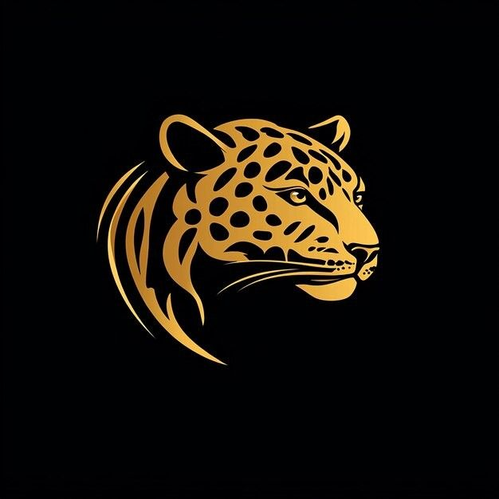
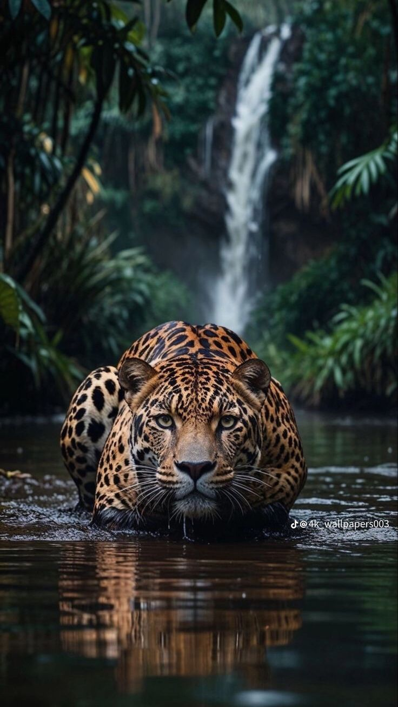
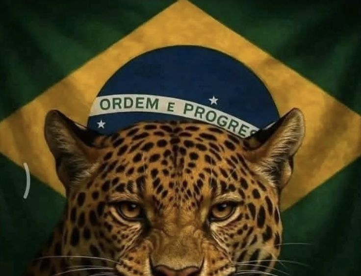
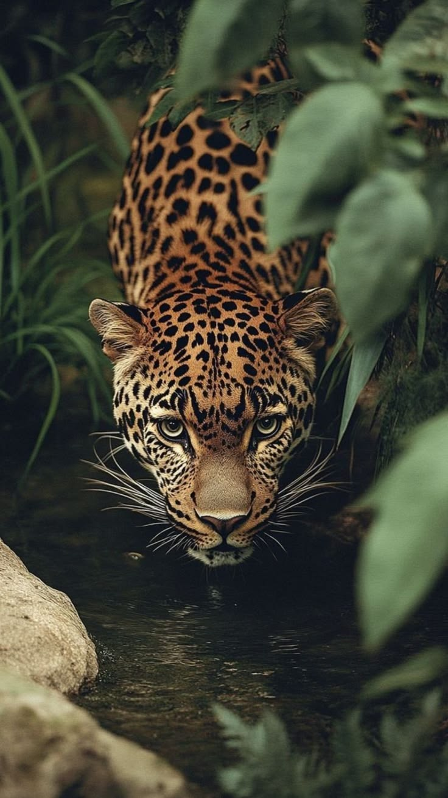
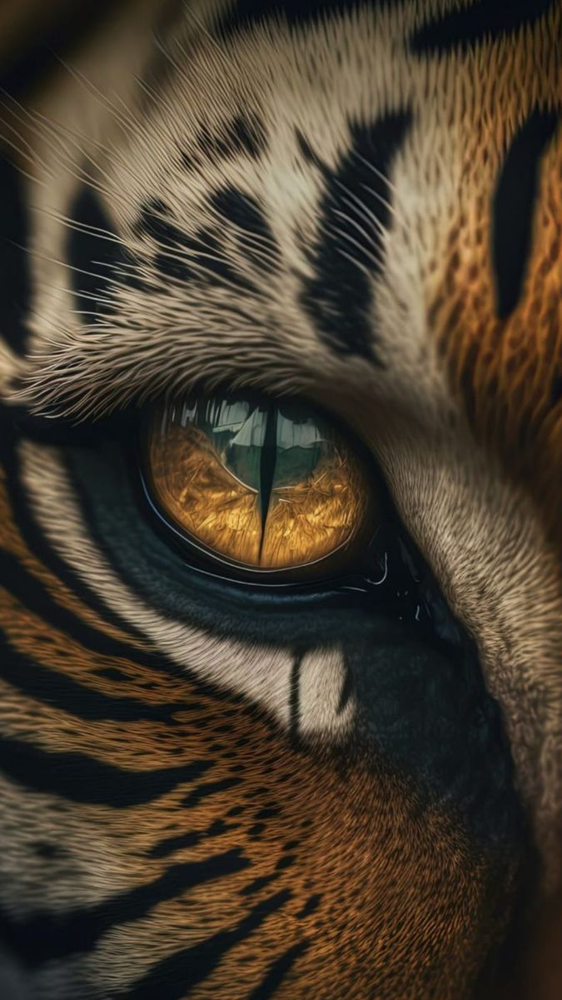
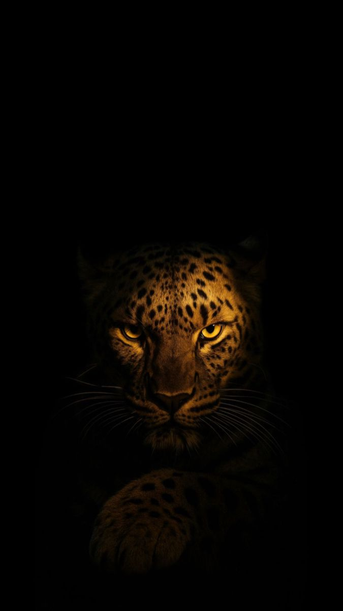

Onça-Pintada
Projeto desenvolvido por Naiane Santos
A Rainha das Florestas Brasileiras
Conheça a força, a inteligência e a importância da onça-pintada para a natureza.
CURIOSIDADES

SOBRE
A onça-pintada é o maior felino das Américas e um dos animais mais impressionantes do planeta. Com sua pelagem dourada coberta por manchas únicas, ela é símbolo de força, coragem e equilíbrio na natureza.
IMPORTÂNCIA
Além de sua beleza, a onça desempenha um papel fundamental nos ecossistemas. Como predadora de topo da cadeia alimentar, ajuda a controlar populações de outras espécies e mantém o ambiente saudável.
CURIOSIDADES
Maior felino das Américas A onça-pintada pode medir até 2 metros de comprimento e pesar mais de 100 kg, sendo um dos felinos mais fortes do mundo.
ONDE VIVE?
Ela é encontrada em diversos ambientes, como a Amazônia, o Pantanal, o Cerrado e partes da Mata Atlântica, sempre próxima de rios e áreas com bastante vegetação.
Excelente nadadora
Diferente da maioria dos gatos, a onça gosta de água e nada com facilidade para atravessar rios ou caçar.
Espécie ameaçada
O desmatamento, os incêndios e a caça ilegal são as maiores ameaças à sobrevivência da onça-pintada.
GALERIA
A onça-pintada representa a riqueza da fauna brasileira. Cuidar desse animal é garantir que as futuras gerações possam conhecer uma das espécies mais fascinantes do mundo. A conservação começa com a informação, o respeito à natureza e a proteção dos nossos biomas.

.jpeg)


.jpeg)

